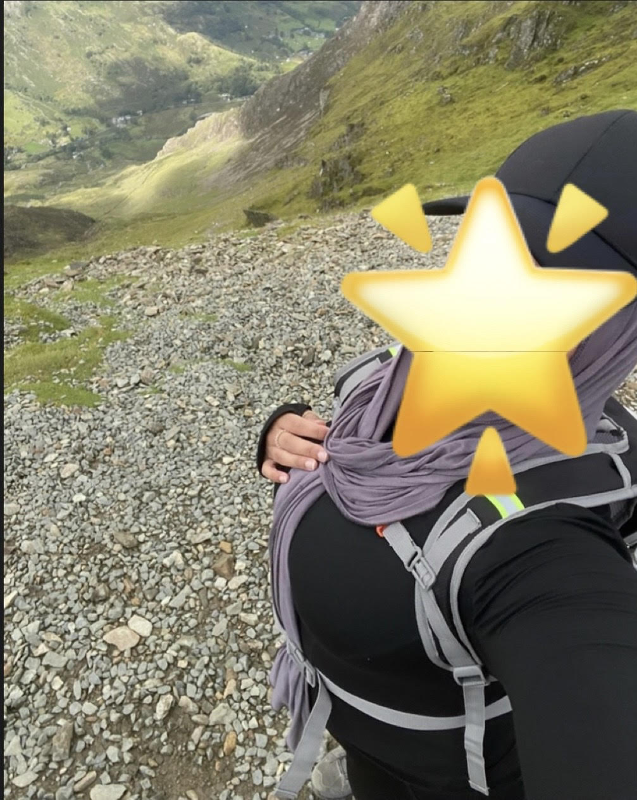
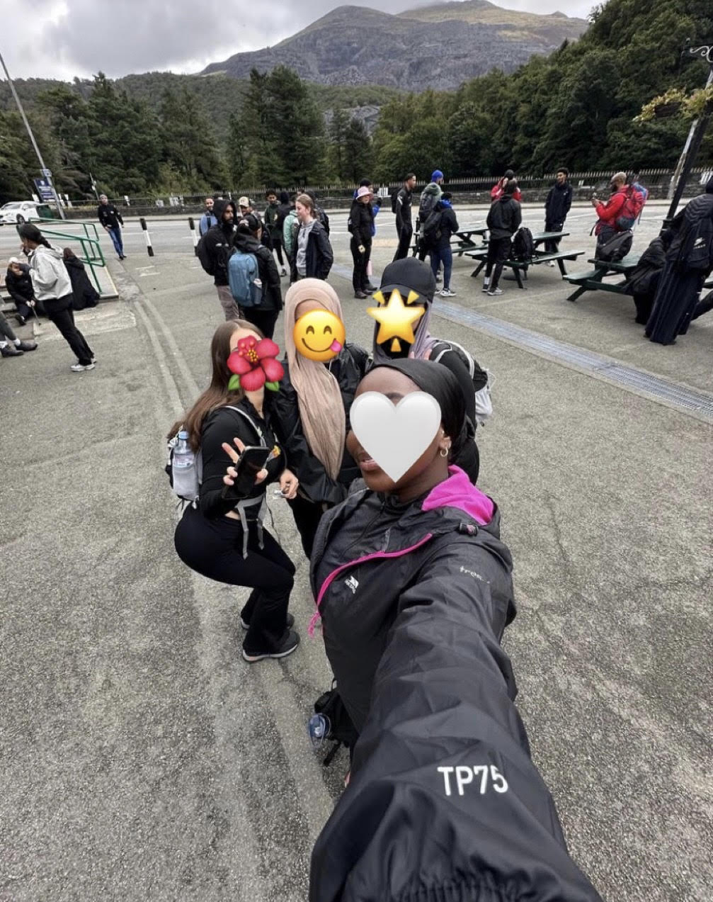

About
Alongside my interest for greenery, i have also taken up other hobbies as of recent, one of which is hiking. Recently i completed a climb of mount snowdon in effort to raise money for charity, though it was a difficult climb due to cold weather, perseverance with my friends and the aim to perform the best i possibly could to strive for the cause i was aiming to help, we were able to do it! The feeling of relief and accomplishment was unmatched, like no other, and honestly quite relaxing.Next, i hope to be able to complete the Seven Sister Cliff Hike!!

